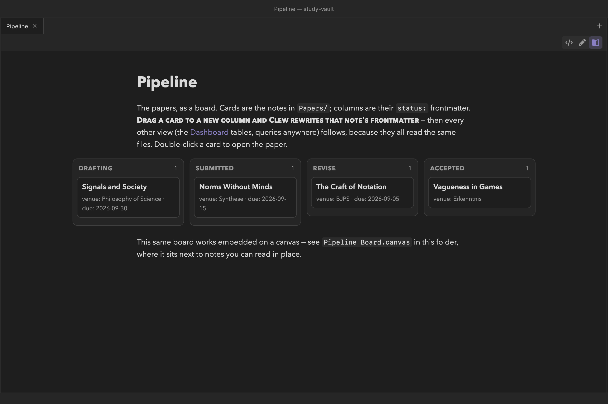

The vault as a database
Tasks and kanban
Two more fences complete Clew's database views.
tasks gathers every checkbox in the vault — or a filtered
slice of them — into one list, and ticking a gathered task writes the
[x] back into the note it came from.
kanban projects notes onto a board whose columns are the
values of one frontmatter field, and dragging a card to another column
rewrites that note's field. Like queries,
both are views over the plain files: the vault stays the only source of
truth, and every view follows every edit.
Where tasks come from
A task is an ordinary Markdown checkbox item — a list bullet
(-, *, or +) followed by
[ ] for open or [x] for done (a capital
X also counts as done):
You write
- [ ] Renew library carrel for the year
- [ ] Book train for the Bristol workshop
- [x] Send Synthese the conflict-of-interest form
Indented (nested) items count too, and checkboxes inside fenced code
blocks are ignored — an example of the syntax never becomes a real
task. Tasks live wherever they are natural: the
study-vault keeps errands in an Errands note and the
per-paper to-dos inside the papers themselves, and lets the fence below
do the gathering.
In reading mode, a note's own
checkboxes are live: click one and Clew flips the [ ] to
[x] (or back) on that source line. When the note is open
in an editor, the toggle is applied through the editor — so it is
undoable and auto-saved — and otherwise it is written straight to
disk.
The tasks fence
A tasks fence scans the vault's notes and renders their
checkbox items as one aggregated view, grouped under a link to each
source note. The fence body takes a status word plus filters:
You write
```tasks
not done
limit: 12
```Reading mode shows
- Renew library carrel for the year
- Book train for the Bristol workshop
- Fix the bibliography style in the book template
- Rewrite §2 with the simpler model
- Ask R. about the replicator-dynamics figure
- Shorten §1 by a third
- Expand appendix A with the mixed-strategy case
That is the study-vault Dashboard's “everything still to
do” block: three errands, and the open items from two papers, gathered
from three different files. The options, all of them:
not done·todo·done·all- A bare word on its own line selects which tasks to show:
not done(or its synonymtodo) shows open items and is the default,doneshows completed items,allshows both. from: Folder- Gather only from notes in this folder and its subfolders — the
same semantics as a query's
from:. tag: #name- Gather only from notes whose
tagsfrontmatter property contains the tag (#optional, case-insensitive). As with queries, body hashtags do not count here. group: note·group: none- By default (
note) tasks appear under a linked heading for each source note.group: nonedrops the headings for one flat checklist. limit: n- Cap the total number of items shown across the whole view.
Notes appear in alphabetical order by name, tasks in the order they occur within each note. A fence that gathers nothing renders “No matching tasks.”
Ticking a gathered task
The checkboxes in a tasks view are live, and — this is the
point — each one knows the note and line it came from. Tick a box on
the Dashboard and Clew rewrites the [ ] in the
source note: the box in Errands flips because the file
Errands.md now says [x]. As with in-note
checkboxes, the write goes through an open editor when there is one
(undoable, auto-saved) and straight to disk otherwise; Clew even
tolerates the task having drifted a line up or down since the view was
rendered. Because every open query view re-renders on any file change,
the ticked task then vanishes from every “not done” list at once.
tasks
fence in a daily-note template or dashboard as the master list.
You get the single inbox without ever moving a task out of its
context, and ticking it in either place updates both.
The kanban fence
Where a query is notes-as-rows, a kanban is notes-as-cards. The board
groups notes into columns by the value of one frontmatter field — by
default status — with one card per note. The
study-vault Pipeline note drives its whole papers workflow
from this fence:
You write
```kanban
group: status
from: Papers
columns: drafting, submitted, revise, accepted
show: venue, due
```
study-vault: columns
are the values of the status field, cards are the notes
in Papers/, and each card shows its
venue and due metadata. The fourth column
continues past the edge of the note column — a wide board scrolls
horizontally.The options, all of them:
group: field- The frontmatter field whose values become the columns. Defaults
to
status. from: Folderandtag: #name- Which notes become cards — the same filters as queries and tasks. With no filter, every note in the vault is a card, which is rarely what you want.
columns: a, b, c- An explicit column list. This fixes the columns and their order —
drafting, submitted, revise, acceptedreads left-to-right as a pipeline — and makes the board exclusive: notes whose field value is not one of the listed columns are not shown. Withoutcolumns:, the board grows one column per distinct value, ordered alphabetically, plus a “—” column for notes where the field is missing or empty. A board wider than the note column does not wrap — it scrolls horizontally, so trailing columns sit just past the edge of the pane. show: f1, f2, …- Fields to display on each card beneath its title, as
field: valuepairs joined with a “·” separator. Fields a note does not have are omitted from its card. The built-ins (name,path,modified) are allowed here too.
Each column header carries a count of its cards; within a column, cards are ordered alphabetically by note name. Double-click a card to open its note in a new tab — a single click begins a drag.
Dragging a card writes the field
Drag a card into another column and drop it. Clew rewrites the
group field in that note's frontmatter to the new column's
value: move Signals and Society from drafting to
submitted and the file now reads status:
submitted. If the note did not have the field, the drop creates
it. The card moves immediately, and the live re-render then confirms
the board from the file itself.
Because the board wrote an ordinary frontmatter value, every other view
reading that field follows on the next render: the Dashboard's
papers-by-status groups reshuffle, a where: status =
drafting table loses the row, the properties panel on that note
shows the new value. Nothing synchronised these views — they all read
the same file.
Boards and task lists on the canvas
Note embeds on the canvas are live previews,
so a note holding a kanban or tasks fence works there too — the
study-vault ships Pipeline Board.canvas, where
the papers board sits alongside the papers themselves. Drags, ticks,
and cell edits inside canvas embeds route back to the source notes
exactly as they do in reading mode, and the embedded views re-render as
the vault changes.
- [ ] checkboxes are ordinary Markdown tasks Obsidian
renders and can tick, and status: submitted is plain
frontmatter Obsidian's own property editor can change. Move a card in
Clew, and Obsidian sees a normal frontmatter edit; tick a task in
Obsidian, and Clew's next render gathers it as done.
Reference
tasks option | Meaning |
|---|---|
not done / todo | Show open tasks only (the default). |
done | Show completed tasks only. |
all | Show every task. |
from: Folder | Gather from this folder and its subfolders. |
tag: #name | Gather from notes whose tags property contains the tag. |
group: note | Group tasks under a link to their source note (the default). |
group: none | One flat list, no per-note headings. |
limit: n | Show at most n tasks in total. |
kanban option | Meaning |
|---|---|
group: field | The frontmatter field that defines the columns (default status). |
from: Folder | Cards come from this folder and its subfolders. |
tag: #name | Cards come from notes whose tags property contains the tag. |
columns: a, b, c | Fix the columns and their order; notes with other values are hidden. Omit for one column per value plus “—”. |
show: f1, f2 | Fields displayed on each card beneath the title. |
See also
- Queries — the table and list views
over the same data, and the full filter semantics
from:/tag:share. - Properties and metadata — the frontmatter the boards rewrite, and the safety valve that protects it.
- How rendering works — reading mode, where checkboxes in a note's own body are toggled.
- The canvas — live note embeds, boards included.
- Daily notes and the diary — a
natural home for a personal
tasksview.